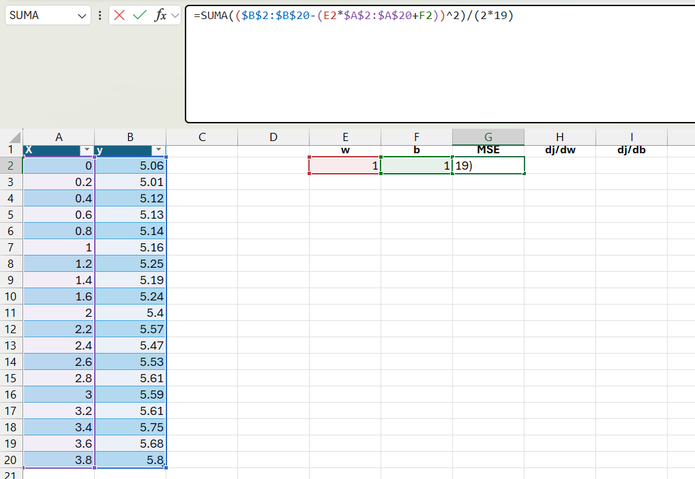

Explaining Linear Regression Machine Learning Models Using Excel Only, Without VBA
About this project
Machine learning has revolutionized the way we do things in the world and has solved problems that, in the past, we did not even know could be solved. Machine learning models are mainly divided into two groups: supervised and unsupervised. In the first case, algorithms of this type are used to predict a feature of an object based on its other features. While it is possible to develop machine learning models without knowing much about the mathematical equations involved, I often faced the problem that when teaching the algorithms, they were not fully understood because the formulas were not used as closely as possible without programming languages. However, since the simplest linear models (linear and logistic regression) do not involve complex optimizations, it is possible to carry out their training in Excel.
Objective
Develop and train Linear machine learning models in Excel with the aim of demonstrating how the training of machine learning models is carried out.
Development
Data collection
For the linear regression model, artificial data was created so that the data followed the function 0.2X + 5 with some noise.
Linear Regression
Linear regression models are a type of model that fits a straight line, Y = mx + b, where m represents the slope and b the Y-axis intercept. The goal of training a linear regression model is to determine the parameters that define a straight line, namely m and b. These coefficients are often represented as θ₁ and θ₀ or β₁ and β₀, respectively.
An analytical solution to this problem is to use the least squares equations. However, for many parameters and large datasets, this approach can take a long time to find a solution compared to the method commonly used in machine learning. The method employed in the vast majority of models to estimate parameters is gradient descent. Gradient descent is an iterative algorithm that estimates parameters step by step by minimizing a cost function. In other words, it is a way to gradually fit the model until it predicts the data as accurately as possible. Regarding the previously mentioned cost function, it serves as a way to evaluate the model. In regression models, a simple way to do this is using the Mean Squared Error (MSE) function, where each actual value is subtracted from its corresponding prediction made by the linear regression equation, Y - Yi. If Yi is the prediction for an element i, then the error is calculated as Y - (θ₀ + θ₁x).
Therefore, the Mean Squared Error (MSE) is the sum of all Y - (θ₀ + θ₁x) squared.
Since the goal is to obtain θ₀ and θ₁, once we define the function we want to optimize (minimize), we must also define another function to update θ₀ and θ₁ at each step, guiding us toward the point where the MSE reaches its minimum. These equations involve gradient descent, which is simply the derivative of the loss function with respect to each θ.
Once derived with respect to θ₀ and θ₁, the resulting equations are:
θ₀(new) = θ₀(old) - α (1/m) Σ (Y - Yi)
θ₁(new) = θ₁(old) - α (1/m) Σ (Y - Yi) x
To apply this in Excel, we start by assuming the initial parameters θ₀ = 1 and θ₁ = 1. With each iteration, these values are updated until the parameters that minimize the loss function (MSE) are determined.
The data representing the function 0.2x + 5 are shown in the following table, covering values from x = 0 to x = 3.8.

First, the first iteration begins by defining the column names and setting the parameters to 1.

Next, we define the loss function (MSE) using the following Excel formula:
Then, the respective parameter updates are applied using the following formulas:


Next, we will apply the equation to update the parameters.


Afterward, the MSE and update cells are dragged down to the current row.

Now we have it. We can take row 2 and drag it, for example, up to row 1000 to 10000, and the displayed parameters will correspond to the minimization.

As seen in the previous image, the parameters obtained after iterating were 0.2 and 0.499, exactly the same as the parameters of the equation (0.2x + 0.5). Thus, with these simple steps, the linear regression equation was determined using gradient descent.
If we plot the data (in a scatter plot with the prediction line), it would look as follows: